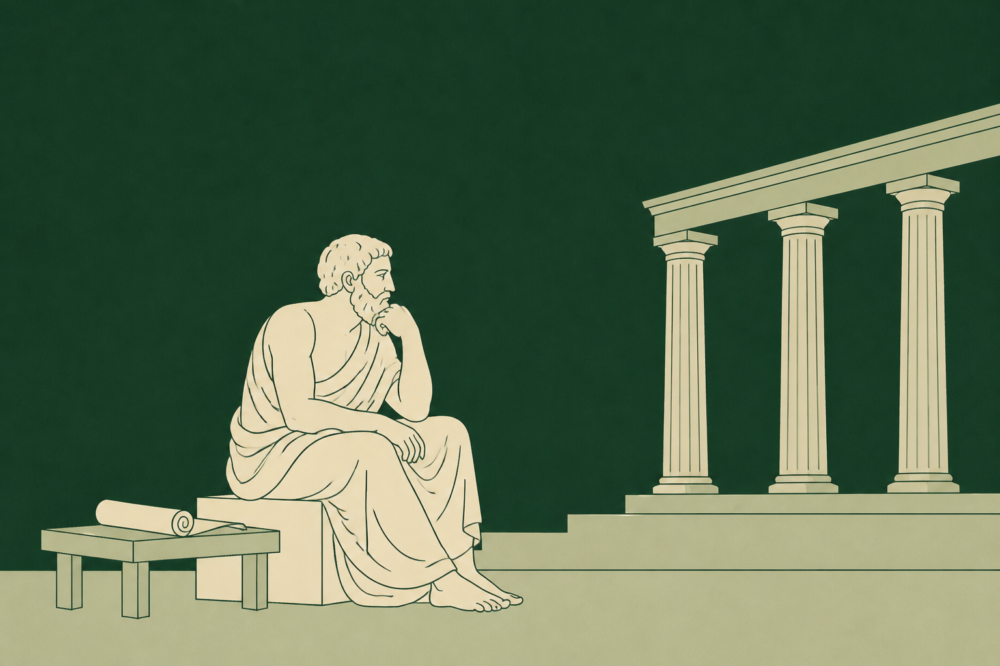
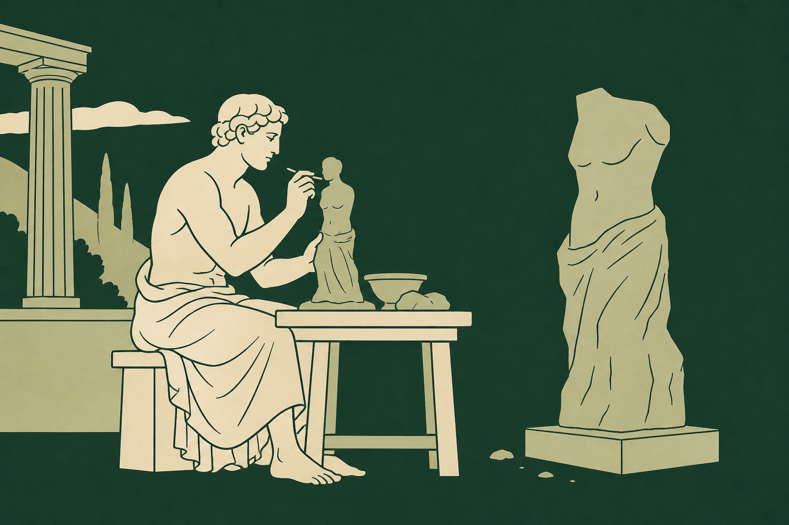
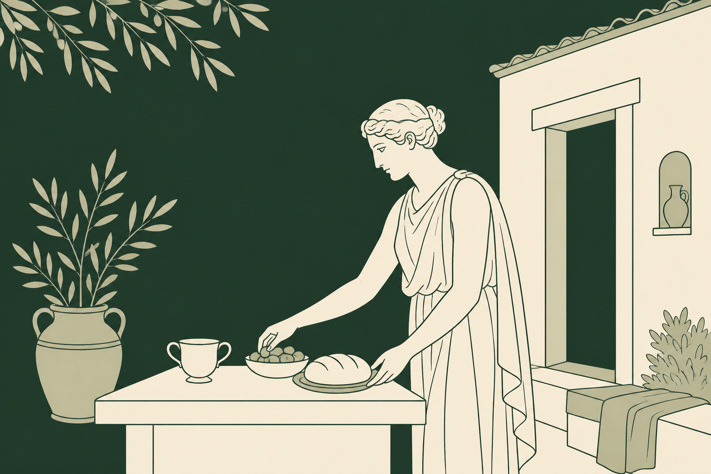
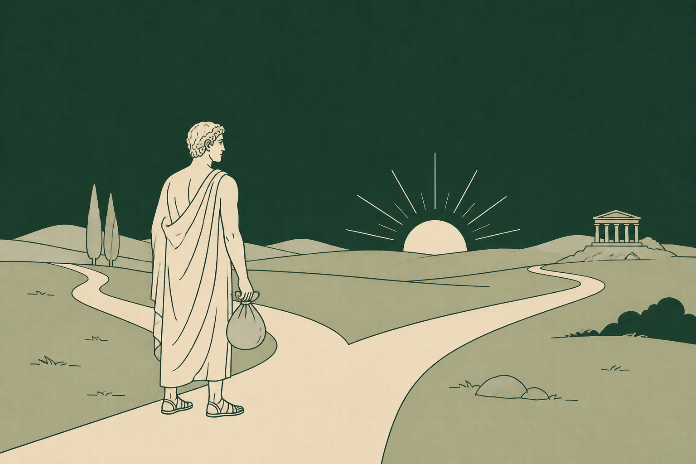
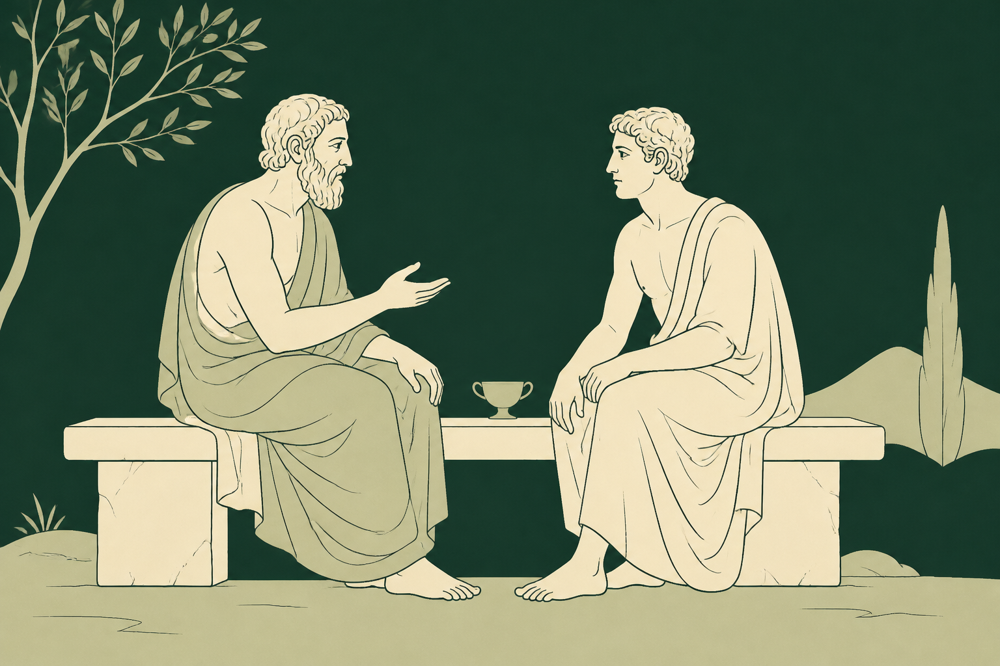
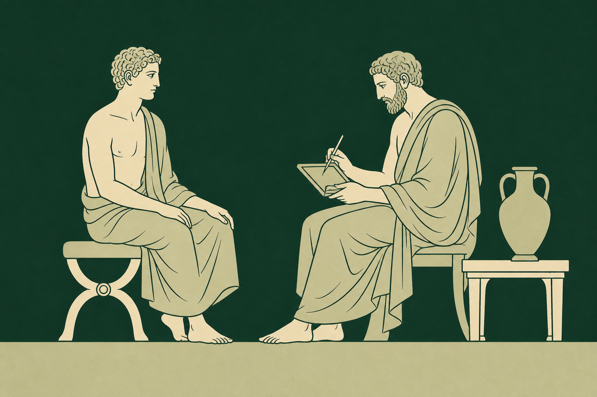
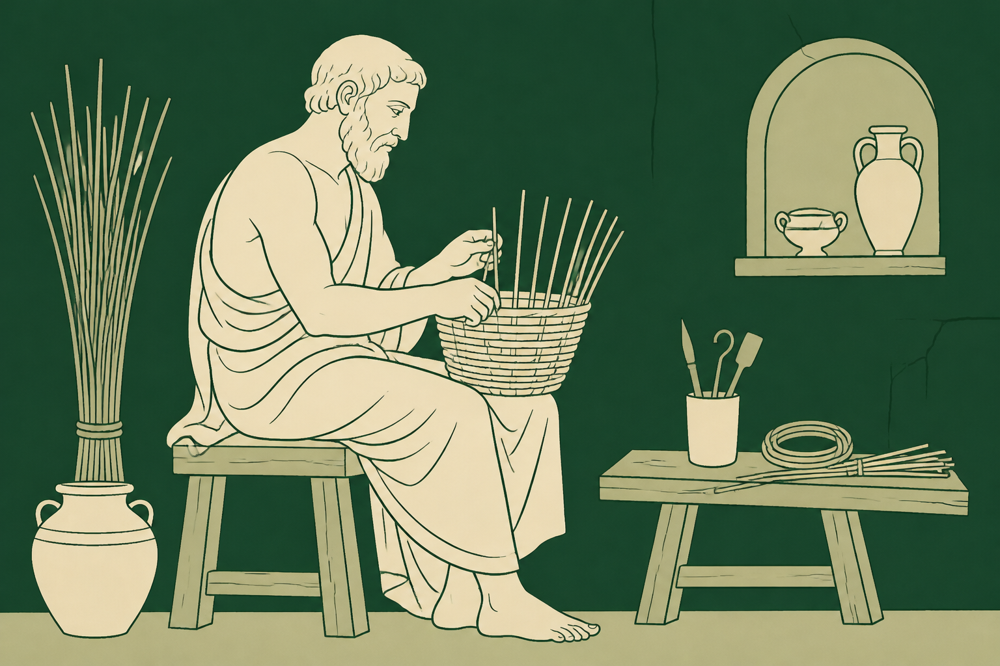

思想者学者、哲学研究者、作家、记者、AI 观察者
思想深度 | 时代问题小憩 · 人物与对话计划
寻找有意思的人，也寻找有意思的生活

思想者学者、哲学研究者、作家、记者、AI 观察者
思想深度 | 时代问题
创作者导演、编剧、艺术家、摄影师、音乐人、独立出版人
作品与表达 | 创造困境
生活实践者书店 / 咖啡馆主理人、手艺人、自由职业者、返乡者
生活选择 | 另一种可能
人生经历者转型者、创业失败后重启者、经历重大转折的人
变化与选择 | 人生细节
关系中的人父母与子女、老友、伴侣、师徒、长期合作伙伴
亲密关系 | 代际理解
职业观察者教师、医生、记者、司机、社区工作者、养老从业者
职业现场 | 社会观察
时代见证者行业老兵、互联网早期从业者、迁徙者、传统技艺传承者
个人记忆 | 时代变迁不同年龄的人谈同一个问题
父母与子女 / 两代创作者不同选择的人讲清各自的理由
稳定工作与自由职业 / 理想与现实让共同经历成为对话的起点
老友 / 伴侣 / 师徒 / 合作伙伴这个人经历过什么？
他如何看待自己的生活？
有没有一些细节，是他愿意慢慢讲的？
我们之间能不能自然地聊起来？
这场谈话结束后，还会留下些什么？